4
“One day, while I was in the fifth standard
at the Rameswaram Elementary School, a
new teacher came to our class. I used to
wear a cap which is common to Muslim
boys. My usual seat was in the front row
next to Ramanadha Sastry, who always
had a sacred thread on. The new teacher
could not stomach a Hindu priest’s
son sitting with a Muslim boy. Being
a staunch supporter of the social order
prevailed then, he asked me to go and sit
on the back bench. I felt very sad, and so did Ramanadha Sastry. The image
of him weeping when I shifted to the last row left a lasting impression in my
mind. After school, we went home and told our parents about the incident.
Lakshmana Sastry summoned the teacher, and in our presence, told the teacher
not to spread the poison of social inequality and communal intolerance in the
minds of innocent children... Not only did the teacher regret his behaviour,
but a strong sense of conviction that Lakshmana Sastry passed in to him had
ultimately reformed that young teacher.”
‘Wings of Fire’, Dr. A.P.J. Abdul Kalam
Fig. 4.1
From Injustice to Justice
Page 54
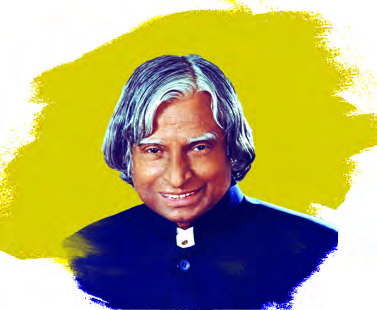
Page 55
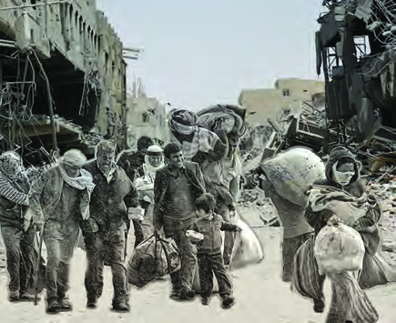
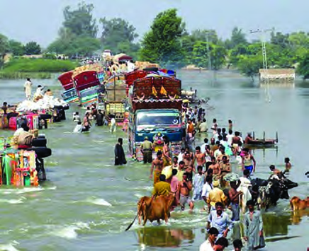
55
From Injustice to Justice
Aren’t you familiar with the childhood experience of Dr. A.P.J. Abdul Kalam,
Former President of India, now?
This experience of APJ Abdul Kalam indicates that there existed a condition where
certain sections in the society were left out without being given due consideration.
Injustice refers to the practice of exclusion of individuals from the mainstream of
society, denial of opportunities and social discrimination. Certain social groups were
excluded willfully on account of their cast, religion or class. Though eligible, these
groups were denied employment and education. They were denied opportunities
and not even considered as individuals. These were some of the practices followed
for marginalisation. This chapter discusses the important people and events that
finally led to the achievement of social justice.
Aren’t you familiar with the words margin, side, boarder? In what sense are these
words commonly used?
l
l
l
l
Marginalisation is the process of excluding some groups from the places where
they deserve equal consideration.
Marginalisation in society occurs for many reasons.
Page 56
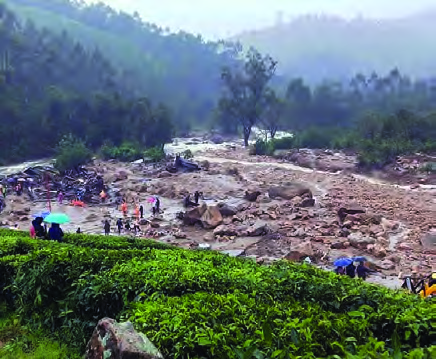
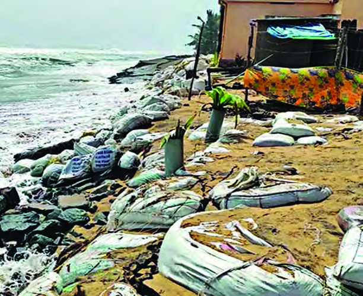
- Part 1
56
VII
Social Science
Fig. 4.2
Haven’t you observed the pictures? What are the conditions depicted in the pictures?
l Natural disaster
l
l
l
Marginalisation taken place by the loss of assets caused due to natural and man-
made disasters. Marginalisation occurs through natural disasters such as floods,
earthquakes, landslides, sea erosion etc., and man-made disasters such as war,
accidents and industrial disasters.
Marginalisation occurs through the intentional exclusion of the people based on
their caste-religion-tribe-gender status. Denial of opportunity for education is an
example.
Identify other causes of marginalisation and organise a discussion on
different types of marginalisation.
Discussion points
l Exclusion
l Eviction
l Natural disasters
l Man-made disasters
Who faces marginalisation in the society?
Many groups are marginalised and discriminated in society. This include women,
transgenders, Dalits, tribals, minorities, poverty-stricken people, refugees, differently
abled persons, ex-prisoners, etc.
Page 57
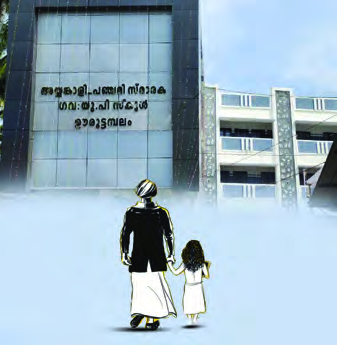
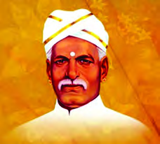
57
From Injustice to Justice
Each of these groups has a long history of struggle against marginalisation.
Thiruvananthapuram:
Ooruttambalam
Government
UP School shall henceforth be known as Ayyankali-
Panchami Memorial Government UP School. Ayyankali
started the strike that changed history at Ooruttambalam
Govt UPS, which was a Kudippallikoodam. A Dalit girl
named Panchami was not allowed to study in school.
Hearing this Ayyankali
came to the school
holding
Panchami’s
hand and made her sit in
the school. The feudals
responded to this by
setting fire to the school.
The remains, including
the half-burnt bench,
can still be seen in the
school museum.
Government UP School at Ooruttambalam is now
Ayyankali-Panchami Memorial School
Fig. 4.3
Mahatma
Ayyankali
Have you read the above news?
Historically, educational opportunities were denied to the so called lower caste
by those who considered themselves as the upper caste. Mahatma Ayyankali
worked to provide equal educational opportunities to the deprived. The greatness
of Ayyankali is that he recognised education as a tool for social transformation.
Hope, you are now familiar with Mahatma Ayyankali’s struggle against caste-
based marginalisation?
There was a time when Dalits had no rights to travel on vehicles, walk on public
roads, wear good clothes and access education. They were deprived of the basic
facilities, dignity, equality and freedom. Such discrimination based on caste is a
serious violation of human rights.Many great people who worked for the upliftment
of the marginalised people strongly advocated education as a tool to defend caste
discrimination. Sree Narayana Guru who preached the message of ‘enlightenment
through education’ along with other renaissance leaders opposed marginalisation
Page 58
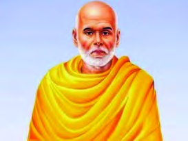
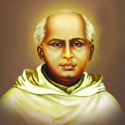
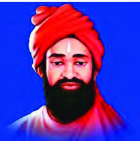
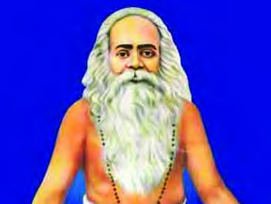
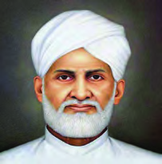
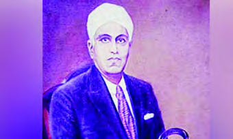
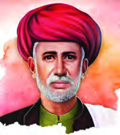
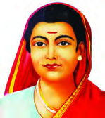
- Part 1
58
VII
Social Science
by popularising modern education. The social reformers like Kuriakose Elias
Chavara, Ayya Vaikunta Swamikal, Chattampi Swamikal, Vakkom Abdul Khader
Moulavi, Poikayil Yohannan, Pandit K.P. Karuppan, Dakshayani Velayudhan etc.
are some examples.
Fig. 4.4
Poikayil Yohannan
Sree Narayana Guru
Kuriakose Elias Chavara
Ayya Vaikunta Swamikal
Chattampi Swamikal
Vakkom Abdul Khader Moulavi
Pandit KP Karuppan
Dakshayani Velayudhan
Fig. 4.5
Fig. 4.6
Savitribai Phule (1831 - 1897)
Jyoti Rao Phule (1827-1890)
Dalit is the term used to describe a community
subjected to caste and religious exploitation. The
term was used by Jyoti Rao Phule who initiated
social change during his times. Phule established educational
institutions for Women and Dalits.
She was the headmistress of India’s first school for girls
in Pune. A night school was established for farmers and
workers. Pune University was renamed as Savitribai Phule
Pune University in recognition of her great contributions in
the field of education.
Page 59
59
From Injustice to Justice
Periyar E. V. Ramasamy Naicker (1879-1973)
He is the founder of the Self-Respect Movement and
was one of the leading anti-caste activists in India.
Being a social reformer, he stood against social
discrimination based on Brahmin dominance. Periyar
also emphasised the importance of women’s education.
Fig. 4.7
Tribals were another group who faced social marginalisation like the Dalits.
Tribal people are those who live together in specific geographical areas who create
their own knowledge and live by applying them since time immemorial. They follow
their own way of life, art and cultural values. The cultural contributions of tribal
peoples are more widely accepted now than ever before. The tribal people who had
supreme command over the resources of their natural habitat, gradually lost this
control and were subsequently marginalised.
One of the most important contributors to Indian
Anthropology. He worked for the preservation of
the unique life of tribal people. He held significant
influence in shaping India’s policy towards tribal
people.
Verrier Elwin (1902-1964)
Fig. 4.8
For a long time, there existed the perception that only the knowledge, art and
culture produced by the dominant sections of society are valuable. But in the
fields of art, language, literature, medicine and agriculture, the tribals have
excellent knowledge and skills that they have acquired through close contact
with nature. There are many tribal groups with unique musical tradition.
Fig. 4.9
Dr. A. Aiyappan (1905 - 1988)
Aiyappan was born on February 5, 1905, at Pavaratty
in Thrissur district. He was a prominent anthropologist
who studied about Indian cultures. He completed research
studies under Malinowski and Raymond Firth from the London
School of Economics and made outstanding contributions to
the study of Ezhava-Gothra community in Kerala.
Page 60
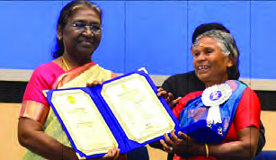
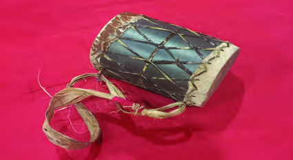
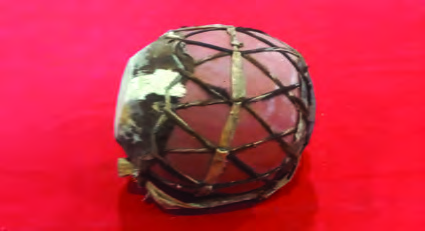
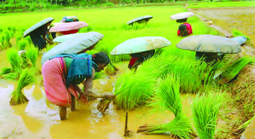
- Part 1
60
VII
Social Science
Nanjiyamma from Irula tribe of Attappadi
in Palakkad district won the 2020 National
Film Award for the best female singer. Nanjiyamma
is the first person from the tribes to win this award.
Her song started with the lines “Kala katha
sandanamere vegu voka poothiriko...”
Nanjiyamma receiving the National Film
Award from the President of India,
Draupadi Murmu.
Fig. 4.10
Nanjiyamma
They also have the expertise to make and to use a variety of musical instruments.
Check out some pictures related to tribal life.
Pere
Natti Pani
Fig. 4.11
Tudi
Davil
Welfare programmes and follow-up measures aimed at ensuring their right to own
land, educational opportunities, nutritious food and health care are implemented
by the central and state governments.
Prepare and present a note on the artistic and cultural life of tribal
people.
Women are a social group that has been marginalised due to gender status.
Page 61
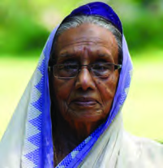
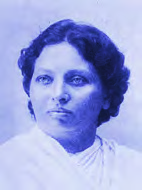
61
From Injustice to Justice
Read the testimonial below…
“Those days, no women acted in dramas. The society didn’t approve
this. Yet, I took the decision to act in drama...
We performed plays in many places of North Malabar... I was stoned
while playing drama in Mukkam. Before I could finish the dialogue, a stone
hit me in the face. I didn’t flinch. My mouth was bleeding. But the drama
was completed without a single dialogue being missed or
forgotten. An attempt was made on my life on the stage
while I was performing a play at Melakkam in Manjeri.
Perhaps, no actor could ever have such an experience.
About halfway through the play, a bullet whizzed passed
my head. Luckly, after deliverig the dialogue I turned my
head at that moment. So it didn’t hit my head. I have faced
many challenges like this… None of these could stop us...
Ayisha can’t be defeated that easily”.
-Nilambur Ayisha
Between Life and Stage(Page 39-42)
Fig. 4.12
This is an anecdote from the memoir of Nilambur Ayisha, a well-known theatre
and film artist in Kerala.
What are the challenges they have to face from the society? What is the reason?
During those days, women were forbidden to engage in artistic activities. In history,
we can see many such experiences, not only in art but in several fields in the society,
women were either marginalised or denied equal rights just because of their gender.
A misconception persisted in the society that women deserve only lower status in
the field of arts, education, work and domestic spheres.
A prominent figure among the social reformers in India
who worked for the rights and empowerment of women
in the 19th century. Education and welfare of widows were the
major areas of activity. She studied about the condition of
women in India and led the activities to solve the problems.
Pandita Ramabai (1858-1922)
Fig. 4.13
Page 62
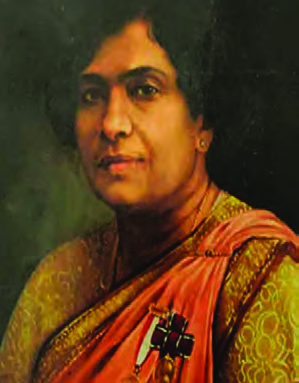
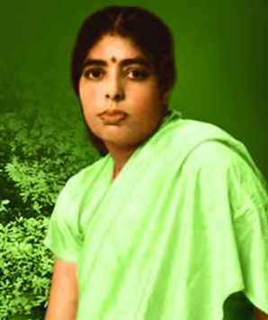
- Part 1
62
VII
Social Science
Fig. 4.14
The world-renowned botanist
born in Thalasseri, Kerala.
She developed high-yielding
sugarcane hybrids at the
Sugarcane Research Centre
in Coimbatore. She was the
first Director General of the
Botanical Survey of India. In
1977, the Nation honoured
her with the Padma Shri
award.
Fig. 4.15
E.K. Janaki Ammal
(1897-1984)
She did her MBBS from
the University of London
as Indian universities
did not admit women for
the same. She became
famous as the first woman
graduate in medicine from
Kerala. She was the first
woman representative in
the Travancore Legislative
Council.
Dr. Poonnen Lukose
(1886-1976)
Apart from women, transgenders also suffer from gender discrimination.
Transgender
Transgender person means a person whose gender does not match with
the gender assigned to that person at birth. This includes trans-men or
trans-women.
Clause (K) of Section 2 TPPR Act, 2019)
Minority
A term applied to groups that are few in the total population.
Page 63
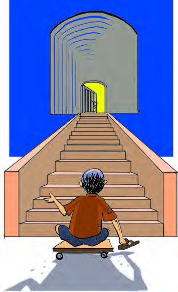
Observe the picture.
Is the world
around us equally
accessible
to all?
Thiruvananthapuram:
Husna
and
Febin face thier dark lives with
determination and bring light to
the classroom. Sharada Devi, from
Thiruvananthapuram,
portrays
Shakespeare and Shelley beautifully
proving that wheelchair is not a
limitation. These three teachers who
had overcome physical challenges
and achieved success in life are
now role models for the differently
abled. Suffering from a rare disease
and unable to move without the aid
of a wheelchair, Sharada Devi was
always at the forefront in studies.
Febin Mariam Jose lost eye sight at
the age of seventeen. Helen Keller,
who proved that blindness is not an
obstacle to attain life’s achievements
is Febin’s hero. Husna, native of
Azhikode in Nedumangad, was able
to see until the age of eleven. With the
support of their families, the trio, who
were brilliant at studies, overcame the
limitations and became teachers in
government colleges.
Triumph of the will
Fig. 4.16
63
From Injustice to Justice
Page 64

- Part 1
64
VII
Social Science
Above is the news about three individuals who overcame physical challenges and
achieved success in life.
Differently abled people, due to their physical characteristics face many challenges
in their daily life compared to others. There are various categories of differently
abled people. Marginalisation is different for different categories.
Buildings, pathways, books etc., are generally designed in
a way that is favourable and accessible to the non-disabled.
What kind of difficulties do the physically challenged face in
these places? Discuss in class.
Rights of Persons with
Disabilities Act, 2016
The Act was enacted to ensure non-
discrimination and equal social life
for the differently abled.
The Paralympics, an international
sports competition for differently
abled athletes began in 1948.
Paralympics
Constitution to prevent discrimination
The architect of the Constitution of India. He worked hard for
the socio-political upliftment of Dalits. He presented the problems of
marginalised communities in India through his writings and stood for their
legal protection.
Dr. B. R. Ambedkar (1891-1956)
The Constitution of India guarantees equality to all citizens. (Article 14). The
Constitution stipulates that there shall be no discrimination on grounds of religion,
race, caste, sex and place of birth (Article 15).
Why did our constitution completely prohibit discrimination?
l Discrimination hinders social progress.
Page 65
65
From Injustice to Justice
l Creates economic inequality.
l Denies safe physical environment.
l
l
l
Find out which laws and articles exist in India against caste
discrimination. Expand the list.
l Articles 14 and 15 of the Constitution
l
l
l
Social systems, environment, political and economic factors hinder the progress,
leading to the marginalisation of certain groups.
Now you may have understood that a social condition that considers euqal justice
to everyone is essential for the growth and the existence of a democratic society.
Let’s expand the list by finding the social factors that considers
everyone for an ideal society.
l More policies for equality
l More laws to prevent discrimination
l Access to quality education for all
l Measures to ensure equality in all sectors of employment
l
l
Page 66
- Part 1
66
VII
Social Science
In democracy, resistance to marginalisation and equal justice can be achieved only
by ensuring the participation for all.
Extended Activities
v Prepare a short biography by collecting more information about Jyoti Rao
Phule, Savitribai Phule, Periyar, Ambedkar etc. With the help of teachers find
out more people who overcame marginalisation through education.
v Prepare a digital album by finding out the unique contributions of tribal people
in the field of agriculture, arts, culture and science.
v Visit the abode of tribal people and understand their social life. These indicators
can be used.
l Lives of their ancestors
l Art, agriculture, food
l Contemporary life
l
v Collect biographies, autobiographies and memoirs that describes the
experiences of women who survived discrimination, from school library and
neighbourhood libraries and organise a book fest in class. Prepare short notes
on each book.
v Invite people working for differently abled to the school either directly or
through digital media and organise a discussion. Ask them about the problems
faced by the differently abled in various fields and the possible solutions.
v What changes need to happen in the current situation for the people with
disabilities to reach everywhere like others? Based on your school premises
prepare a small project for the improvement of physical and academic facilities
of differently abled students. Submit it to the local self government institution
with the help of teachers.
l Wheelchair ramps
l Handrails
Page 67
67
From Injustice to Justice
l Braille script and audio library
l Physically challenged friendly washrooms
v How to respond to discrimination? Conduct a class discussion based on the
following points
l The marginalised themselves should come forward.
l The conditions of the marginalised can be effectively addressed through
the collective interventions of the community.
l Effective intervention can be done using government systems.
Add more indicators.